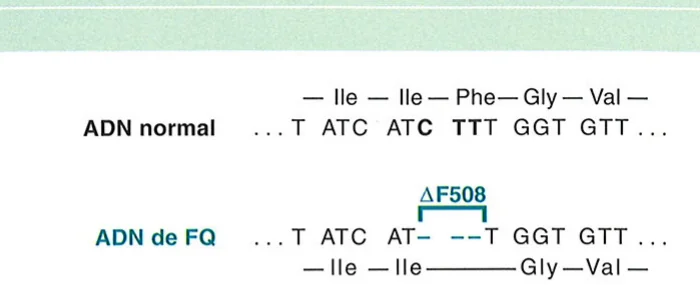
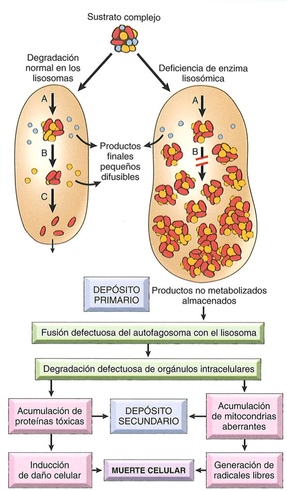
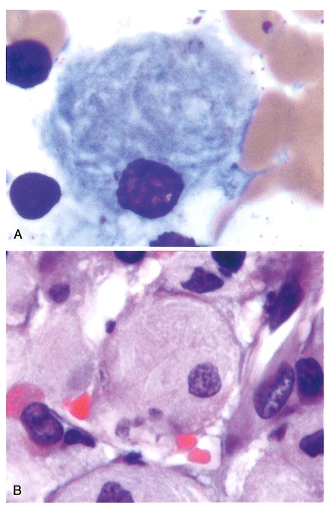
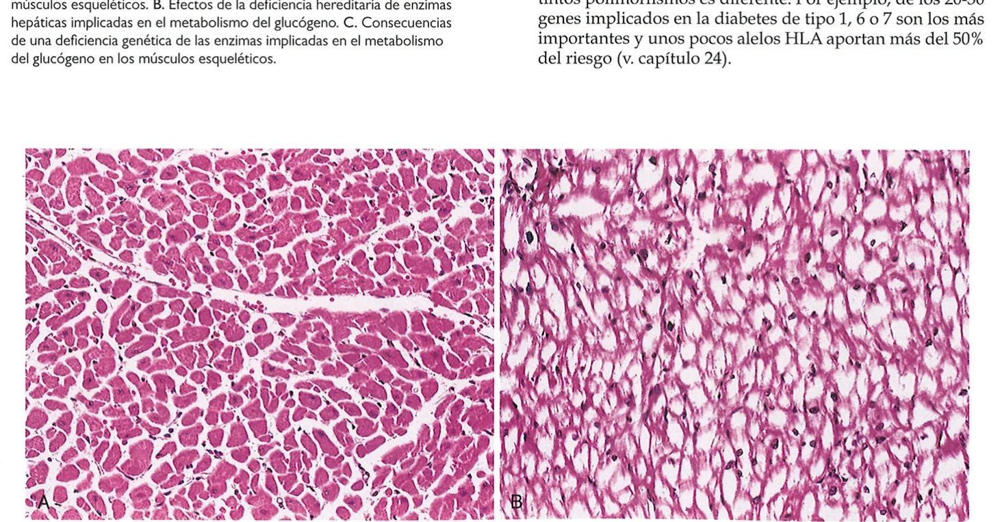
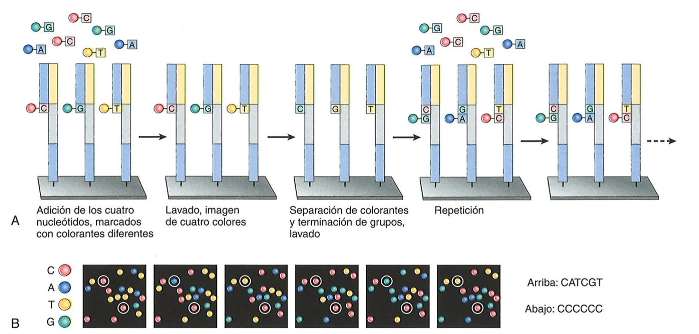

00 Alcance y método
Qué cubre esta guía
AlcanceCapítulo 5 del Robbins y Cotran, 10ª edición: páginas impresas 141-188 (48 páginas).
Este resumen del Certamen 1 se redactó antes de adoptar la cita por página; se publica sin reescribirlo. El Manual del Certamen 1 incluye el índice tema-clase-Robbins y las fuentes.
★ Repaso rápido
Lo esencial en 60 segundos
Si solo te llevas estas ideas
- Los trastornos genéticos se clasifican en mendelianos (un gen, alta penetrancia), cromosómicos (numéricos o estructurales) y multigénicos complejos (polimorfismos más ambiente).
- Hereditario es lo transmitido por la línea germinal; congénito solo significa presente al nacer y puede no ser genético (sífilis congénita; Huntington se manifiesta en la adultez).
- En autosómico dominante dominan receptores y proteínas estructurales (riesgo 50%); en autosómico recesivo, enzimas (riesgo 25%); no existe herencia ligada al Y.
- Las enfermedades por depósito lisosómico y las glucogenosis son prototipos de herencia recesiva; la manosa-6-fosfato dirige las hidrolasas ácidas al lisosoma.
- Trisomía 21 (95% por no separación meiótica materna), deleción 22q11.2 (DiGeorge y velocardiofacial, gen TBX1) y Klinefelter y Turner son los citogenéticos clave.
- Herencia no clásica: expansión de tripletes (SXF, Huntington), ADN mitocondrial (herencia materna, heteroplasmia), impronta (Prader-Willi y Angelman) y mosaicismo gonadal.
01 Sección
Ideas clave
Ideas clave
- La frecuencia a lo largo de la vida de enfermedades genéticas se estima en 670 por 1.000; el 50% de los abortos espontáneos de los primeros meses se asocian a alteración cromosómica; un 1% de los recién nacidos tiene una anomalía cromosómica evidente.
- Los trastornos genéticos se clasifican en tres categorías: trastornos mendelianos (un gen, alta penetrancia), trastornos cromosómicos (numéricos o estructurales) y trastornos multigénicos complejos (polimorfismos más ambiente).
- Existe además un grupo de trastornos monogénicos de herencia no clásica: expansión de repeticiones de tripletes, ADN mitocondrial, impronta genómica y mosaicismo gonadal.
- Las bases bioquímicas de los trastornos mendelianos se agrupan en: defectos enzimáticos, defectos de receptores y transporte, proteínas no enzimáticas y reacciones adversas a fármacos (farmacogenética).
- Los trastornos autosómicos recesivos incluyen casi todos los errores congénitos del metabolismo; prototipos: enfermedades por depósito lisosómico y glucogenosis.
- Los desequilibrios de los cromosomas sexuales se toleran mejor que los autosómicos, por la inactivación del X (hipótesis de Lyon) y el escaso material genético del Y.
- La secuenciación masiva (NGS), junto a PCR, FISH y matrices citogenómicas, ocupa un lugar central en el diagnóstico genético molecular.
02 Sección
Genes y enfermedad humana; mutaciones
- Hereditario: trastorno originado en los padres y transmitido por la línea germinal a través de las generaciones (es familiar). Congénito: solo indica "que se nace con" el trastorno; algunas enfermedades congénitas no son genéticas (por ejemplo, la sífilis congénita) y no todas las enfermedades genéticas son congénitas (la enfermedad de Huntington se manifiesta a partir de la tercera o cuarta década).
- Una mutación es un cambio permanente del ADN. Las mutaciones que afectan a células germinativas se transmiten a la descendencia; las somáticas no causan enfermedades hereditarias, pero tienen importancia en los cánceres y en algunas malformaciones congénitas.
Tipos de mutación y sus efectos
- Mutación puntual en secuencias codificantes:
- De sentido erróneo: sustituye un aminoácido por otro. Es conservadora si el aminoácido sustituido es bioquímicamente similar (poco cambio funcional) y no conservadora si es muy distinto. Ejemplo clásico: en la β-globina, el codón CTC (GAG en el ARNm) que codifica ácido glutámico se sustituye por CAC (GUG en el ARNm), que codifica valina, y causa la anemia drepanocítica.
- Sin sentido: convierte un codón de aminoácido en un codón de terminación. Ejemplo: en la β-globina, el cambio C a U en el codón 39 (glutamina a codón de terminación) interrumpe prematuramente la traducción; el péptido corto se degrada rápidamente y produce β-talasemia (forma grave).
- Mutaciones en secuencias no codificantes: mutaciones o deleciones de secuencias promotoras y potenciadoras interfieren la unión de los factores de transcripción, reduciendo mucho o aboliendo la transcripción (algunas talasemias). Las mutaciones puntuales dentro de intrones originan separación (splicing) defectuosa, fracaso en la formación de ARNm maduro y ausencia de producto génico.
- Deleciones e inserciones:
- Si el número de bases afectadas es tres o un múltiplo de tres, la pauta de lectura se conserva y se sintetiza una proteína que pierde o gana uno o más aminoácidos. Ejemplo: la deleción de tres bases en el gen de la fibrosis quística (pérdida de fenilalanina, mutación F508).
- Si el número no es múltiplo de tres, se produce una mutación con desplazamiento de la pauta de lectura: incorporación de aminoácidos incorrectos y truncamiento en un codón de terminación prematuro. Ejemplos: deleción de una base en el locus ABO (responsable del alelo O) e inserción de cuatro bases en el gen de la hexosaminidasa A (principal causa de enfermedad de Tay-Sachs en judíos askenazíes).

Figura 5.2. Deleción de tres bases en el gen de la fibrosis quística: se pierde fenilalanina, pero la pauta de lectura se conserva porque la deleción es múltiplo de tres. Robbins y Cotran, Patología estructural y funcional, 10ª ed., Elsevier España, 2021, p. 143. Ver créditos - Variantes estructurales: cambios del número de copias (amplificaciones o deleciones) y translocaciones con pérdida o ganación de función aberrante. Pueden ser germinales (suelen afectar a porciones contiguas de cromosoma, como en el síndrome de microdeleción del cromosoma 22q) o somáticas (cáncer; ejemplo clásico: cromosoma Filadelfia, translocación t(9;22) entre BCR y ABL en la leucemia mieloide crónica). La NGS permite detectar estas alteraciones con alta resolución; por ejemplo, se han descrito en trastornos frecuentes como el autismo.
- Mutaciones de repeticiones de trinucleótidos: amplificación de una secuencia de tres nucleótidos que casi siempre contiene guanina y citosina. Ejemplo: el síndrome del cromosoma X frágil presenta entre 250 y 4.000 repeticiones CGG en la región reguladora del gen FMR1; en la población normal el promedio es de 29. Son mutaciones dinámicas: el grado de amplificación aumenta durante la gametogenia, lo que condiciona el patrón de herencia y el fenotipo.
- Otros genes no codifican proteínas, sino que producen ARN no codificantes (entre las familias más importantes, los micro-ARN y los ARN largos no codificantes), con funciones reguladoras.

Niveles de interferencia con la expresión génica
- La transcripción se puede suprimir por deleciones génicas y por mutaciones puntuales que afectan a las secuencias promotoras.
- El procesamiento anormal del ARNm se debe a mutaciones que afectan a los intrones o a las uniones de separación, o a ambos.
- La traducción se ve afectada cuando una mutación sin sentido crea un codón de terminación (mutación de terminación de la cadena) dentro de un exón.
- Algunas mutaciones puntuales patógenas expresan cantidades normales de una proteína disfuncional.
03 Sección
Trastornos mendelianos: patrones de transmisión
- Todos los individuos portan varios genes deletereos, en su mayoría recesivos. Un 80-85% de las mutaciones mendelianas son familiares; el resto son mutaciones de novo.
- Pleotropismo: un gen produce múltiples efectos (drepanocitosis: hemólisis, obstrucción vascular, fibrosis esplénica, infartos, cambios óseos). Heterogeneidad genética: loci distintos producen el mismo rasgo (sordera infantil grave). Codominancia: ambos alelos contribuyen al fenotipo (histocompatibilidad, grupos sanguíneos).
Tabla: patrones de herencia de los trastornos monogénicos
| Patrón | Características | Proteínas implicadas | Ejemplos citados |
|---|---|---|---|
| Autosómico dominante | Expresión en heterocigoto; riesgo del 50% por hijo; mutaciones de novo frecuentes si reduce la reproducción; penetrancia incompleta y expresividad variable | Receptores y proteínas estructurales, no enzimas | Huntington, neurofibromatosis, distrofia miotónica, esclerosis tuberosa, poliquistosis renal, poliposis familiar del colon, esferocitosis hereditaria, von Willebrand, Marfan, algunas variantes de Ehlers-Danlos, osteogenia imperfecta, acondroplasia, hipercolesterolemia familiar, porfiria intermitente aguda |
| Autosómico recesivo | No afecta a los padres; riesgo del 25% por embarazo; consanguinidad frecuente; expresión uniforme, penetrancia completa, inicio temprano | Enzimas (el 50% de enzima suficiente o "margen de seguridad") | Fibrosis quística, fenilcetonuria, galactosemia, homocistinuria, depósito lisosómico, déficit de alfa-1-antitripsina, enfermedad de Wilson, hemocromatosis, glucogenosis, drepanocitosis, talasemias, hiperplasia suprarrenal congénita, alcaptonuria, ataxia de Friedreich, atrofia muscular espinal |
| Ligado al X recesivo | El hombre es hemicigótico; el padre no lo transmite a sus hijos y todas sus hijas son portadoras; hijos de mujeres heterocigóticas: 50% de riesgo | Variadas | Distrofia de Duchenne, hemofilias A y B, enfermedad granulomatosa crónica, déficit de G6PD, agammaglobulinemia, Wiskott-Aldrich, diabetes insípida, Lesch-Nyhan, cromosoma X frágil |
| Ligado al X dominante | Muy pocos trastornos; por mujer afectada a la mitad de hijos e hijas; por padre afectado a todas sus hijas | Variadas | Raquitismo resistente a la vitamina D, síndrome de Alport |
- No existe herencia ligada al Y: sus genes (región específica masculina) se relacionan con la espermatogenia y los varones afectados suelen ser infértiles.
- Penetrancia (portadores sin fenotipo) y expresividad variable se explican por otros genes y el ambiente: el fenotipo drepanocítico depende del locus de la alfa-globina; en la hipercolesterolemia familiar del aporte dietético de lípidos.
- Mecanismos de la enfermedad autosómica dominante: regulación de vías con retroalimentación (receptores de LDL en la HF); proteínas estructurales con efecto dominante negativo (colágeno: basta una cadena anormal para desestabilizar el trimero; osteogenia imperfecta); ganancia de función casi siempre dominante (huntingtina tóxica); haploinsuficiencia.
04 Sección
Bases moleculares y bioquímicas de los trastornos monogénicos
Cuatro grupos: defectos enzimáticos, defectos de receptores y transporte, proteínas no enzimáticas y reacciones adversas a fármacos.
| Proteína o función | Lesión molecular | Ejemplo |
|---|---|---|
| Fenilalanina hidroxilasa (enzima) | Mutación del sitio de separación: cantidad reducida | Fenilcetonuria |
| Hexosaminidasa A (enzima) | Mutación de separación o de pauta de lectura: cantidad reducida | Enfermedad de Tay-Sachs |
| Adenosina desaminasa (enzima) | Mutación puntual: actividad reducida | Inmunodeficiencia combinada grave |
| Alfa-1-antitripsina (inhibidor de enzimas) | Mutación de sentido erróneo: alteración de la secreción | Enfisema y hepatopatía |
| Receptor de LDL | Deleciones o mutaciones: síntesis, transporte o unión alteradas | Hipercolesterolemia familiar |
| Receptor de vitamina D | Mutación puntual: fallo de señalización | Raquitismo resistente a la vitamina D |
| Hemoglobina (transporte de oxígeno) | Deleción: cantidad reducida | Alfa-talasemia |
| Regulador de la conductancia transmembrana de la fibrosis quística | Deleciones y otras mutaciones: proteínas no funcionales o mal plegadas | Fibrosis quística |
| Colágeno (extracelular) | Reducción de colágeno normal o colágeno defectuoso | Osteogenia imperfecta, Ehlers-Danlos |
| Fibrilina | Sentido erróneo | Síndrome de Marfan |
| Distrofina (membrana) | Deleción con reducción de la síntesis | Distrofia de Duchenne/Becker |
| Anquirina, espectrina o proteína 4.1 | Heterogéneo | Esferocitosis hereditaria |
| Factor VIII (hemostasia) | Deleciones, inserciones o sin sentido | Hemofilia A |
| Proteína Rb y neurofibromina (regulación del crecimiento) | Deleciones / heterogéneo | Retinoblastoma hereditario / neurofibromatosis tipo 1 |
Defectos enzimáticos: consecuencias del bloqueo metabólico
- Acumulación del sustrato y de intermedios (por estimulación de la vía menor M1-M2), con daño tisular si son tóxicos: galactosemia (déficit de galactosa-1-fosfato uridiltransferasa) y enfermedades por depósito lisosómico.
- Reducción del producto final: albinismo por ausencia de tirosinasa (síntesis de melanina a partir de tirosina).
- Si el producto final es inhibidor por retroalimentación, su déficit genera sobreproducción de intermedios dañinos: síndrome de Lesch-Nyhan.
- Incapacidad de inactivar un sustrato lesivo: déficit de alfa-1-antitripsina; la elastasa de los neutrófilos destruye la elastina alveolar y produce enfisema.
Farmacogenética
- Deficiencias enzimáticas que solo se manifiestan con fármacos: con primaquina, la deficiencia de G6PD produce anemia hemolítica grave. Los polimorfismos de genes de enzimas, transportadores y receptores del metabolismo de fármacos sustentan la medicina personalizada.
05 Sección
Trastornos asociados a defectos en las proteínas estructurales
Síndrome de Marfan
- Trastorno del tejido conjuntivo del esqueleto, ojos y aparato cardiovascular. Prevalencia: 1 de cada 5.000 personas; 70-85% de los casos familiares, autosómicos dominantes.
- Patogenia: defecto de la fibrilina 1 (gen FBN1, 15q21.1); cerca de 1.000 mutaciones, la mayoría de sentido erróneo. Dos mecanismos: 1) pérdida de soporte estructural: reducción de fibrilina que inhibe su polimerización (efecto negativo dominante) o que debilita el tejido por debajo del umbral (haploinsuficiencia); 2) biodisponibilidad de TGF-beta: las microfibrillas normales secuestran el TGF-beta, y su defecto causa una activación excesiva con inflamación, daño del músculo liso vascular y aumento de las metaloproteasas. Apoyos: la ganancia de función del receptor de TGF-beta tipo II causa el síndrome de Marfan tipo II (MFS2); las mutaciones de TGF-beta3 predisponen a aneurismas aórticos; los antagonistas del receptor de angiotensina reducen el diámetro de la raíz aórtica en modelos murinos. Las mutaciones de FBN2 originan aracnodactilia contractural congénita.
- Clínica: talla alta, extremidades y dedos largos, ligamentos laxos, dolicocéfalía, cifosis o escoliosis, pectus excavatum o tórax en paloma; ectopia lentis (subluxación bilateral del cristalino por debilitamiento de las zónulas ciliares); prolapso de la válvula mitral (40-50%) con válvulas "fofas"; dilatación de la aorta ascendente por necrosis quística de la media con insuficiencia aórtica y disección aórtica (principal causa de muerte). La ecocardiografía aumenta la capacidad de detección. La expresión clínica es muy variable; el diagnóstico usa los criterios revisados de Gante (antecedentes, signos cardinales y mutación de la fibrilina; afectación de dos de los cuatro sistemas: esquelético, cardiovascular, ocular y cutáneo).
Síndromes de Ehlers-Danlos (SED)
- Grupo heterogéneo por mutaciones en genes del colágeno, enzimas modificadoras del colágeno y, menos frecuentemente, otras proteínas de la matriz extracelular. Seis variantes clásicas, con subgrupos hasta 11 tipos moleculares; frecuencia colectiva de 1 de cada 5.000 nacimientos; herencia con los tres patrones mendelianos.
- Rasgos generales: piel hiperextensible y frágil, articulaciones hipermóviles con tendencia a luxaciones, equimosis, difícil reparación quirúrgica, rotura del colon y de grandes arterias (SED vascular), fragilidad ocular con rotura de córnea y desprendimiento de retina (SED con cifoescoliosis), hernia diafragmática (SED clásico); cicatrización deficiente.
| Tipo de SED | Hallazgos clínicos | Defecto genético | Herencia |
|---|---|---|---|
| Clásico (I/II) | Hipermovilidad articular y cutánea, cicatrices atróficas, hematomas | COL5A1, COL5A2 | Autosómica dominante |
| Hipermovilidad (III) | Hipermovilidad articular, dolor, luxaciones | Desconocido | Autosómica dominante |
| Vascular (IV) | Piel delgada, rotura arterial o uterina, hematomas | COL3A1 | Autosómica dominante |
| Cifoescoliosis (VI) | Hipotonía, laxitud articular, escoliosis, fragilidad ocular | Lisil hidroxilasa | Autosómica recesiva |
| Artrocalasia (VIIa, VIIb) | Hipermovilidad articular importante, cambios cutáneos leves, escoliosis, hematomas | COL1A1, COL1A2 | Autosómica dominante |
| Dermatosparaxis (VIIc) | Fragilidad extrema de la piel, piel laxa, hematomas | N-peptidasa del procolágeno | Autosómica recesiva |
- La cifoescoliosis es la variante recesiva más frecuente: mutaciones de PLOD1 (lisil hidroxilasa), necesaria para los enlaces cruzados de las fibras de colágeno.
- En la artrocalasia, en la conversión del procolágeno a colágeno, los heterocigotos enferman porque las cadenas anormales interfieren con la formación de hélices normales. La dermatosparaxis (ADAMTS2, colágeno-N-peptidasa) es recesiva por tratarse de una carencia enzimática. Un trastorno similar al SED clásico se debe a mutación del gen TNXB (tenascina X). Otros trastornos por defectos del colágeno: osteogenia imperfecta, síndrome de Alport y epidermólisis ampollar.
06 Sección
Trastornos asociados a defectos en las proteínas receptoras
Hipercolesterolemia familiar (HF)
- Autosómica dominante, muy frecuente; altera la eliminación hepática de LDL y produce hipercolesterolemia con ateroesclerosis prematura. Causas: mutaciones del gen del receptor de LDL (LDLR) en el 80-85%; de la apolipoproteína B-100 (ligando del receptor) en el 5-10%; y mutaciones activadoras de PCSK9 en el 1-2%.
- Clínica: heterocigotos (1 de cada 200) con colesterol al doble o triple desde el nacimiento, xantomas tendinosos y ateroesclerosis prematura; homocigotos con colesterol 5-6 veces mayor, xantomas e infartos antes de los 20 años. Un 3-6% de los supervivientes de un infarto tienen HF.
- Metabolismo: el hígado secreta VLDL (ApoB, ApoC, ApoE); la lipólisis configura la IDL; la mitad es captada por el receptor de LDL hepático (ApoB/E) y el resto deviene LDL rica en colesterol. El 70% del LDL plasmático se elimina en el hígado por endocitosis en fositas revestidas; el colesterol sale del lisosoma mediante NPC1 y NPC2.
- Regulación por el colesterol liberado: inhibe la HMG-CoA reductasa, activa la acil-coenzima A: colesterol aciltransferasa, suprime la síntesis de receptores y eleva PCSK9, que degrada receptores reciclados.
- Clases de mutaciones del receptor de LDL (más de 2.000 descritas): I, no se sintetiza (alelo nulo); II, receptor mal plegado que se acumula en el retículo endoplásmico; III, receptor en superficie que no se une a LDL; IV, receptor que se une pero no se localiza en las fositas revestidas; V, no se disocia del ligando en el endosoma y se degrada; VI, no se direcciona a la membrana basolateral.
- Tratamiento: estatinas (inhibición de la HMG-CoA reductasa) y anticuerpos anti-PCSK9 aumentan los receptores de LDL. PCSK9 se descubrió en personas con colesterol extremadamente bajo por variantes de pérdida de función del gen.

07 Sección
Trastornos asociados a defectos enzimáticos
Enfermedades por depósito lisosómico (EDL)
- Las hidrolasas ácidas se etiquetan en el aparato de Golgi con manosa-6-fosfato y se dirigen a los lisosomas; los errores de este marcaje causan un tipo de EDL (mucolipidosis). Frecuencia combinada: 1 de cada 5.000 nacidos vivos; unas 70 enfermedades identificadas.
- Patogenia: depósito primario (acumulación del sustrato incompletamente degradado en los lisosomas, que crecen e interfieren la función celular) y depósito secundario (autofagia defectuosa: persisten mitocondrias disfuncionales (mitofagia alterada) que generan radicales libres y apoptosis; se acumulan sustratos autofágicos como alfa-sinucleína y huntingtina, vinculando las EDL con trastornos neurodegenerativos).
- La distribución del depósito depende de dónde se degrada el sustrato: el encéfalo es rico en gangliósidos (clínica neurológica de las gangliosidosis) y los órganos fagocíticos (bazo, hígado) aumentan de tamaño.
- Tratamiento: sustitución enzimática; reducción de sustrato; chaperonas moleculares (estabilizan el plegamiento de la enzima mutante); trasplante de células madre hematopoyéticas y terapia génica en casos seleccionados.
- Relación con enfermedades frecuentes: el portador de Gaucher es factor de riesgo de enfermedad de Parkinson (y prácticamente todos los pacientes de Gaucher desarrollan Parkinson); la Niemann-Pick tipo C eleva el riesgo de enfermedad de Alzheimer.


| Enfermedad | Deficiencia enzimática o defecto | Metabolito acumulado |
|---|---|---|
| Glucogenosis tipo 2 (enfermedad de Pompe) | Alfa-1,4-glucosidasa (glucosidasa lisosómica) | Glucógeno |
| Gangliosidosis GM1 (tipo I de lactantes, tipo 2 juvenil) | Beta-galactosidasa | Gangliósido GM1 |
| Gangliosidosis GM2: enfermedad de Tay-Sachs | Hexosaminidasa A (subunidad alfa) | Gangliósido GM2 |
| Gangliosidosis GM2: enfermedad de Sandhoff | Hexosaminidasa A y B | Gangliósido GM2 y globósido |
| Gangliosidosis GM2 variante AB | Proteína activadora del gangliósido | Gangliósido GM2 |
| Leucodistrofia metacromática | Arilsulfatasa A | Sulfátido |
| Deficiencia de múltiples sulfatasas | Arilsulfatasas A, B y C; sulfatasa de esteroides; iduronato sulfatasa; heparano N-sulfatasa | Sulfátido, sulfato de esteroides y de iduronato |
| Enfermedad de Krabbe | Galactosilceramidasa | Galactocerebrósido |
| Enfermedad de Fabry | Alfa-galactosidasa A | Ceramida trihexósido |
| Enfermedad de Gaucher | Glucocerebrosidasa | Glucocerebrósido |
| Enfermedad de Niemann-Pick tipos A y B | Esfingomielinasa | Esfingomielina |
| MPS I (Hurler) | Alfa-L-iduronidasa | Sulfato de dermatano y de heparano |
| MPS II (Hunter) | Iduronato 2-sulfatasa | Sulfato de dermatano y de heparano |
| Mucolipidosis II (enfermedad de células I) | Enzimas que fosforilan la manosa-6-fosfato; las hidrolasas sin marcador se secretan al exterior | Mucopolisacáridos y glucolípidos, polidistrofia seudo-Hurler |
| Fucosidosis | Alfa-fucosidasa | Esfingolípidos con fucosa y fragmentos de glucoproteínas |
| Manosidosis | Alfa-manosidasa | Oligosacáridos con manosa |
| Aspartilglucosaminuria | Aspartilglucosamina amida hidrolasa | Aspartilglucosamina |
| Enfermedad de Wolman | Lipasa ácida | Ésteres de colesterol y triglicéridos |
Enfermedad de Tay-Sachs (gangliosidosis GM2)
- Deficiencia de hexosaminidasa A por mutaciones de la subunidad alfa (gen HEXA, cromosoma 15). La degradación de GM2 requiere tres polipéptidos: alfa (HEXA, 15), beta (HEXB, 5) y activador (GM2A, 5). Forma más frecuente de gangliosidosis GM2, especialmente prevalente entre los judíos askenazíes (1 portador de cada 30). Más de 100 mutaciones de HEXA; la mayor parte altera el plegamiento, con degradación proteosómica de la enzima mal plegada.
- Morfología: gangliósido GM2 acumulado en muchos tejidos, con clínica por afectación neuronal: neuronas balonizadas con vacuolas lisosómicas; con la microscopía electrónica, inclusiones membranosas a modo de hojas de cebolla; proliferación de la microglía. Las células ganglionares retinianas tumefactas producen la mancha rojo cereza de la mácula (típica, aunque no patognomónica).
- Clínica: lactantes aparentemente normales; desde los 6 meses, deterioro motor y mental, flacidez, ceguera y demencia; estado vegetativo completo en 1-2 años y muerte a los 2-3 años de edad. Diagnóstico antenatal y detección de portadores por estudios enzimáticos y análisis del ADN.
Enfermedad de Niemann-Pick
- Tipos A y B: acumulación de esfingomielina por deficiencia de esfingomielinasa ácida (gen en 11p15.4); frecuente en askenazíes. Aunque es autosómica recesiva, los heterocigotos que heredan de la madre pueden enfermar (gen improntado con expresión materna preferente).
- Tipo A: forma grave del lactante con afectación neurológica extensa; células fagocíticas espumosas (vacuolas lisosómicas con esfingomielina y colesterol, a veces con cuerpos de zebra) ampliamente distribuidas; bazo hasta 10 veces su peso; balonización neuronal difusa; mancha rojo cereza en un tercio a la mitad; muerte a los 1-2 años. Diagnóstico: actividad enzimática en leucocitos y biopsia de médula ósea, con análisis del ADN.
- Tipo B: organomegalia sin afectación del sistema nervioso central; llegan a la vida adulta.
- Tipo C: distinta en genes y bioquímica, y más frecuente que A y B juntas. Mutaciones de NPC1 (95%) y NPC2, proteínas del transporte de colesterol libre del lisosoma al citoplasma: defecto primario del transporte de lípidos no enzimático (NPC1 unida a membrana; NPC2 soluble). Clínica variable: hidropesía fetal, muerte neonatal, hepatitis neonatal o curso crónico con ataxia, parálisis de la mirada vertical supranuclear, distonía, disartria y regresión psicomotora.
Enfermedad de Gaucher
- Autosómica recesiva por mutaciones del gen de la glucocerebrosidasa; la EDL más frecuente. Se acumula glucocerebrósido (del catabolismo de membranas de leucocitos y eritrocitos envejecidos), sobre todo en fagocitos. Además del depósito, participan la activación de macrófagos con secreción de citocinas (IL-1, IL-6 y factor de necrosis tumoral).
- Subtipos:
- Tipo I (99% de los casos; crónico no neuronopático; afecta sobre todo a judíos europeos): actividad residual detectable, sin afectación encefálica; predomina la afectación esplénica y esquelética; no acorta demasiado la longevidad.
- Tipo II (aguda neuronopática del lactante): sin actividad detectable; hepatoesplenomegalia con afectación progresiva del sistema nervioso central y muerte temprana.
- Tipo III (intermedio): afectación sistémica del tipo I más afectación progresiva del sistema nervioso central que comienza en la adolescencia o adultez temprana.
- Morfología: células de Gaucher (fagocitos de hasta 100 micras, citoplasma fibrilar de papel arrugado por lisosomas elongados con lípidos en pilas de bicapas; y fuertemente PAS positivas) en hígado, bazo, médula ósea y otros órganos; bazo hasta 10 kg; infiltración medular en el 70-100% del tipo I con erosiones óseas y fracturas patológicas por citocinas de macrófagos activados.
- Relación con Parkinson: riesgo 20 veces superior en los pacientes con Gaucher; entre el 5 y el 10% de los pacientes con Parkinson tienen mutaciones del gen de la glucocerebrosidasa; existe una relación recíproca entre la enzima y la agregación de alfa-sinucleína.
- Diagnóstico: actividad enzimática en leucocitos o fibroblastos en cultivo (no identifica heterocigotos; se detectan por mutación conocida). Tratamiento con enzima recombinante eficaz (esperanza de vida normal en tipo I, aunque muy caro); trasplante alogénico de células madre hematopoyéticas potencialmente curativo; terapia génica; reducción de sustrato con inhibidores de la glucosilceramida sintetasa.


Mucopolisacaridosis (MPS)
- Deficiencia de las enzimas que degradan los glucosaminoglucanos (sulfato de dermatano, heparano, queratano y condroitina); 11 variantes clínicas; todas autosómicas recesivas menos el síndrome de Hunter (MPS II), ligado al X. La excreción urinaria de mucopolisacáridos está aumentada y sirve de herramienta diagnóstica.
- Clínica general: rasgos faciales toscos, opacidad corneal, rigidez articular y discapacidad intelectual; células balonizadas (lisosomas con material granular PAS positivo) en fagocitos, endotelios, músculo liso intimal y fibroblastos; hepatoesplenomegalia, deformidades esqueléticas, lesiones valvulares, depósitos subendoteliales arteriales (especialmente coronarias) y lesiones cerebrales; las lesiones subendoteliales miocárdicas pueden provocar isquemia, infarto e insuficiencia cardiaca.
- Síndrome de Hurler (MPS I-H): deficiencia de alfa-L-iduronidasa; de los más graves; hepatoesplenomegalia a los 6-24 meses, crecimiento retrasado, rasgos toscos y deformidades esqueléticas; muerte entre los 6-10 años por complicaciones cardiovasculares.
- Síndrome de Hunter (MPS II): herencia ligada al X, sin opacificación corneal y evolución más leve.
Gaucher, Tay-Sachs y Niemann-PickGaucher (glucocerebrosidasa) es la EDL más frecuente: células de papel arrugado, tres subtipos y sustitución enzimática eficaz; el portador es factor de riesgo de Parkinson. Tay-Sachs (hexosaminidasa A) muestra mancha rojo cereza; Niemann-Pick tipo C es un defecto del transporte de colesterol (NPC1 y NPC2), no enzimático.
08 Sección
Enfermedades por depósito de glucógeno (glucogenosis)
- Deficiencia hereditaria de enzimas de la síntesis o degradación del glucógeno; el depósito puede ser localizado, difuso o sistémico. Se clasifican clásicamente en una docena de síndromes con número romano.
- Metabolismo: glucosa a glucosa-6-fosfato (glucocinasa), a glucosa-1-fosfato (fosfoglucomutasa) y a uridina difosfoglucosa; elongación por glucógeno sintetasas (enlaces alfa-1,4 y enzima ramificante). La degradación por fosforilasas genera glucosa-1-fosfato hasta la dextrina límite, que requiere la enzima desramificante. El glucógeno lisosómico se degrada por la alfa-glucosidasa ácida.
| Tipo | Deficiencia enzimática | Clasificación | Cambios morfológicos y clínicas |
|---|---|---|---|
| I: von Gierke (hepatorenal) | Glucosa-6-fosfatasa | Tipo hepático | Hepatomegalia y nefromegalia con glucógeno intracitoplásmico y glucógeno intranuclear tubular; hipoglucemia con convulsiones, retraso del crecimiento, hiperlipidemia e hiperuricemia (gota y xantomas), tendencia a hemorragias por disfunción plaquetaria; con tratamiento, la mayoría sobrevive con adenomas hepáticos |
| V: McArdle | Fosforilasa muscular | Tipo miopático | Acumulación de glucógeno de predominio subsarcolémico; calambres con ejercicio agotador, mioglobinuria en el 50% de los casos, aparición en adultos (más de 20 años), sin elevación de lactato venoso con el ejercicio, creatina cinasa sérica siempre elevada; longevidad normal |
| II: Pompe | Alfa-glucosidasa ácida (maltasa ácida lisosómica) | Otros (lisosómica, generalizada) | Balonización de los lisosomas con glucógeno; cardiomegalia masiva, hipotonía generalizada y fracaso cardiorrespiratorio en 2 años; forma leve del adulto con miopatía crónica musculoesquelética; disponible tratamiento de reposición enzimática |
- Otros tipos citados: fosforilasa hepática y enzima desramificante (tipo hepático-hipoglucémico, con acumulación en muchos órganos y clínica dominada por hepatomegalia e hipoglucemia); fosfofructocinasa muscular (tipo VII); y ausencia de las enzimas ramificante y desramificante, con depósito generalizado y muerte precoz. En las formas hepáticas domina la hipoglucemia; en las miopáticas, la debilidad muscular y los calambres por falta de energía glucolítica sin elevación de lactato.


09 Sección
Trastornos asociados a defectos en las proteínas que regulan el crecimiento celular
- Dos clases de genes regulan el crecimiento y la diferenciación: protooncogenes y genes supresores de tumores; sus mutaciones son importantes en la patogenia de los tumores. La mayoría de las mutaciones tumorales son somáticas; en cerca del 5% de los cánceres colaboran mutaciones de la línea germinal. La mayoría de los cánceres familiares son autosómicos dominantes, con pocos recesivos (se desarrolla en el capítulo 7).
10 Sección
Trastornos multigénicos complejos
- Un gen con al menos dos alelos, cada uno de frecuencia de al menos el 1% en la población, es polimorfo; cada variante es un polimorfismo. Según la hipótesis variante frecuente/enfermedad frecuente, la enfermedad surge al heredar muchos polimorfismos de efecto modesto y baja penetrancia; ninguno es necesario ni suficiente por sí mismo.
- Diabetes tipo 1: de 20-30 genes implicados, 6 o 7 son los más importantes y unos pocos alelos HLA aportan más del 50% del riesgo. Algunos polimorfismos son comunes a varias enfermedades del mismo tipo (autoinmunitarias) y otros son específicos.
- Rasgos normales multifactoriales (color de cabello, ojos o piel, talla, inteligencia) muestran variación continua en curva en campana; el ambiente condiciona la expresión (diabetes tipo 2 desencadenada por el aumento de peso; estaturas distintas en gemelos monocigóticos; privación cultural).
- Diagnóstico: confirmar agregación familiar y descartar herencia mendeliana o cromosómica; la variabilidad de gravedad también se explica por expresividad variable y penetrancia reducida, lo que dificulta la distinción.
11 Sección
Trastornos cromosómicos
Cariotipo normal y terminología citogenética
- Las células somáticas humanas contienen 46 cromosomas (22 pares de autosomas y dos sexuales: XX mujeres, XY varones). El cariotipado se realiza en metafase (inhibidores del huso como la colchicina) con tinción de Giemsa (bandas G): 400-800 bandas por conjunto haploide (hasta 1.500 bandas en profase).
- Notación: número total, cromosomas sexuales y alteraciones en orden creciente (47,XY,+21). El brazo corto es p (de petit) y el largo q; regiones numeradas desde el centrómero hacia fuera, luego bandas y subbandas (Xp21.2).
Aneuploidía y mosaicismo
- Euploide: múltiplo exacto del número haploide (23). Aneuploidía: complemento no múltiplo de 23; causas habituales: falta de separación y retraso de la anafase. Los errores meióticos generan gametos n+1 o n-1 y, tras la fecundación, cigotos trisómicos (2n+1) o monosómicos (2n-1); el retraso de la anafase deja un cromosoma fuera del núcleo y produce monosomía.
- La monosomía de un autosoma suele impedir el desarrollo; varias trisomías autosómicas permiten sobrevivir, y salvo la 21 presentan malformaciones graves con muerte a edades tempranas. Las monosomías o trisomías de los cromosomas sexuales, e incluso aberraciones más extrañas, son compatibles con vida y fenotipo variable.
- Mosaicismo: dos o más poblaciones celulares con complementos distintos en el mismo individuo, por errores mitóticos precoces. El de los cromosomas sexuales es relativamente frecuente (por ejemplo, 45,X/47,XXX; la gravedad del síndrome de Turner depende del porcentaje de células 45,X); los autosómicos son raros (un mosaico viable, como 46,XY/47,XY,+21, da un síndrome de Down variable).
Alteraciones estructurales de los cromosomas
| Alteración | Descripción | Ejemplo de notación |
|---|---|---|
| Deleción | Pérdida de parte del cromosoma; mayoritariamente intersticial (dos roturas en un brazo con pérdida del segmento); raras veces terminales | 46,XY,del(16)(p11.2p13.1) |
| Cromosoma en anillo | Forma especial de deleción: roturas en ambos extremos con fusión; comportamiento anormal en mitosis y meiosis | 46,XY,r(14) |
| Inversión | Dos roturas en un cromosoma con reincorporación del segmento invertido; paracéntrica (afecta solo a un brazo) o pericéntrica (a ambos lados del centrómero); suelen ser compatibles con desarrollo normal | No aplicable |
| Isocromosoma | Se pierde un brazo y se duplica el otro (dos brazos cortos o dos largos con información idéntica); el más frecuente en nacidos vivos afecta al brazo largo del X, i(X)(q10), que causa monosomía de los genes de Xp y trisomía de los de Xq | i(X)(q10) |
| Translocación equilibrada recíproca | Intercambio de material entre dos cromosomas; fenotipo habitualmente normal pero riesgo de gametos desequilibrados con aborto o hijo malformado | 46,XX,t(2;5)(q31;p14) |
| Translocación robertsoniana (fusión céntrica) | Entre dos cromosomas acrocéntricos, con roturas cerca de los centrómeros; el producto pequeño se pierde (genes redundantes como los del ARN ribosómico); fenotipo normal; 1 de cada 1.000 individuos normales; riesgo de descendencia anormal | der(14;21)(q10;q10) |
- Los cambios estructurales deben afectar a unos 2-4 millones de pares de bases para verse con bandeo convencional; la FISH detecta cambios de solo kilobases. Cerca del 7,5% de las concepciones presentan alteración cromosómica (la mayoría no viable) y entre recién nacidos la frecuencia es del 0,5-1,0%.
Trastornos citogenéticos de autosomas
Trisomía 21 (síndrome de Down)
- La alteración cromosómica más frecuente y una de las principales causas de discapacidad intelectual. Incidencia: 1 de cada 700 recién nacidos en Estados Unidos. El 95% son trisomías libres (47 cromosomas) por no separación meiótica; en el 95% de los casos el cromosoma extra es materno, con fuerte correlación con la edad materna (1/1.550 en mujeres menores de 20 años; 1/25 en mayores de 45).
- Tipo translocación (4%): translocación robertsoniana del brazo largo del 21 a otro cromosoma acrocéntrico (22 o 14), frecuentemente (aunque no siempre) familiar, heredada de un progenitor portador (por ejemplo, 45,XX,der(14;21)(q10;q10)); la edad materna no influye.
- Mosaico (1%): no separación mitótica precoz del cromosoma 21; síntomas más leves y variables según el porcentaje de células anormales; la edad materna no influye.
- Clínica: perfil aplanado de la cara, fisuras palpebrales oblicuas, pliegues epicánticos, pliegue simiesco, discapacidad intelectual (algunos mosaicos con inteligencia normal o casi normal). Malformaciones cardiacas en el 40% (comunicaciones auriculoventriculares 43%, interventriculares 32%, interauriculares 19%, tetralogía de Fallot 6%), principal causa de muerte en la lactancia y primera infancia; atresias esofágicas e intestinales. Riesgo leucémico: 20 veces para la leucemia linfoblástica B aguda y 500 veces para la leucemia mieloide aguda (habitualmente megacarioblástica). Todos los mayores de 40 años muestran cambios neuropatológicos de enfermedad de Alzheimer. Respuestas inmunitarias anormales con infecciones graves (sobre todo pulmonares) y procesos autoinmunitarios tiroideos. La media de edad de la muerte es de 47 años (no superaba los 25 años en 1983).
- Bases moleculares: desequilibrio de la dosis génica (la mayoría de los genes del 21 sobrepresados, incluido el de la proteína precursora del péptido beta-amiloide, APP); alrededor del 10% de los genes sobrepresados implicados en la regularización de funciones mitocondriales; el cromosoma 21 tiene la más alta densidad de ARN largos no codificantes.
- Diagnóstico prenatal: el 5-10% del ADN celular libre en la sangre materna es fetal; con secuenciación masiva puede determinarse con gran precisión la dosis genética de los genes del cromosoma 21 (y de otras trisomías), como prueba no invasiva; las pruebas positivas se confirman con cariotipado convencional.
Tabla: trisomías autosómicas
| Trisomía | Síndrome | Incidencia | Rasgos principales | Cariotipos típicos |
|---|---|---|---|---|
| 21 | Down | 1 de cada 700 nacimientos | Discapacidad intelectual, perfil aplanado, pliegues epicánticos, pliegue simiesco, malformaciones cardiacas, estenosis intestinal, hipotonía, predisposición a leucemia | 47,XX,+21; 46,XX,der(14;21)(q10;q10),+21 (tipo translocación); mosaico 46,XX/47,XX,+21 |
| 18 | Edwards | 1 de cada 8.000 nacimientos | Microcefalia y discapacidad intelectual, paladar hendido y labio leporino, microftalmia, malformaciones cardiacas, renales y hernia umbilical, abducción limitada de la cadera, pies en mecedora, orejas de implantación baja | 47,XX,+18; mosaico 46,XX/47,XX,+18 |
| 13 | Patau | 1 de cada 15.000 nacimientos | Microcefalia y discapacidad, paladar hendido y labio leporino, polidactilia, malformaciones cardiacas y renales, hernia umbilical, pies en mecedora | 47,XX,+13; con translocación 46,XX,+13,der(13;14)(q10;q10); mosaico 46,XX/47,XX,+13 |
- También se han descrito trisomías de los cromosomas 8, 9, 13, 18 y 22; las trisomías 18 y 13 presentan malformaciones mucho más graves y diversas que la 21, con asociación a mayor edad materna; es muy raro que estos lactantes cumplan el año de vida (la mayoría fallece en semanas o meses).

Síndrome por deleción del cromosoma 22q11.2
- Espectro de trastornos por una pequeña deleción de la banda q11.2 del brazo largo del 22 (región de unas 1,5 Mb con 30-40 genes). Afecta a 1 de cada 4.000 nacimientos y con frecuencia no se diagnostica por la variabilidad clínica.
- Fenotipos previamente descritos como entidades separadas:
- Síndrome de DiGeorge: hipoplasia tímica con inmunodeficiencia de linfocitos T, hipoplasia de paratiroides con hipocalcemia, malformaciones cardiacas del tracto de salida y malformaciones faciales leves; también trastornos atópicos y autoinmunidad (por ejemplo, trombocitopenia).
- Síndrome velocardiofacial: dismorfia facial (nariz prominente, retrognatia), paladar hendido, malformaciones cardiovasculares y discapacidad para el aprendizaje; inmunodeficiencia menos frecuente.
- Psiquiatría: el 25% de los pacientes adultos con este síndrome desarrollan esquizofrenia; a la inversa, el 2-3% de las esquizofrenias de inicio adulto presentan la deleción; trastorno por déficit de atención e hiperactividad en el 30-35% de los niños afectados.
- Diagnóstico: sospecha clínica confirmada por FISH; el 90% de los DiGeorge y el 80% de los velocardiofaciales muestran la deleción; el 30% de los pacientes con malformaciones cardiacas del troncocono la tienen sin los demás rasgos.
- Genes: TBX1 (factor de transcripción de la caja T) es el más asociado al fenotipo; se expresa en el mesénquima faríngeo y el fondo del saco endodérmico de los que derivan las estructuras faciales, el timo y las paratiroides; su diana PAX9 controla el desarrollo del paladar, las paratiroides y el timo. Los genes de los trastornos conductuales aún se tienen que identificar.
Tabla: trastornos citogenéticos de los cromosomas sexuales
| Trastorno | Cariotipo | Clínica esencial | Otros datos |
|---|---|---|---|
| Síndrome de Klinefelter | 47,XXY en el 90%; mosaicos en un 15% (mayoritariamente 46,XY/47,XXY; algunos con 47,i(Xq),Y) | Hipogonadismo masculino: constitución eunucoide con piernas largas, testículos pequeños atróficos, pene pequeño, ausencia de caracteres sexuales secundarios, ginecomastia y déficit verbal moderado | Incidencia aproximada de 1 de cada 660 varones vivos; causa importante de reducción de la espermatogenia e infertilidad; edad materna avanzada (más de 40 años) como factor de riesgo |
| Síndrome de Turner | 45,X en el 57%; del resto, un tercio alteraciones estructurales del X (i(X)(q10), r(X), del(Xq) o del(Xp)) y dos tercios mosaicos (por ejemplo, 45,X/46,XX; 45,X/46,XY; 45,X/47,XXX) | Monosomía completa o parcial del X; hipogonadismo con fenotipo femenino; talla baja (no suele superar 150 cm), cuello alado, cubito valgo, amenorrea, genitales infantiles, cintillas ováricas | 1 de cada 2.000 nacidas vivas (la alteración de los cromosomas sexuales más frecuente en mujeres); malformaciones cardiacas en el 25-50% (coartación preductal de la aorta y válvula aórtica bicúspide); el 50% desarrolla autoanticuerpos frente al tiroides y hasta la mitad hipotiroidismo clínico; alteraciones metabólicas (intolerancia a la glucosa, obesidad, esteatosis hepática no alcohólica, resistencia a la insulina) |
- Fundamentos:
- Hipótesis de Lyon (1961): solo un cromosoma X está activo; el otro se heteropicnotiza; la inactivación del X materno o paterno es aleatoria en torno al día 5,5 embrionario y persiste en todas las células derivadas; las mujeres normales son mosaicos de dos poblaciones. El X inactivo se ve como el corpúsculo de Barr. El gen XIST, un ARN largo no codificante, recubre el X inactivo e inicia el silenciamiento por modificación de la cromatina y metilación del ADN; es apagado en el X activo.
- Genes que escapan a la inactivación: un 30% de los genes de Xp y un número menor (3%) en Xq, y los de las regiones seudoautosómicas. Si bastara una dosis de los genes del X, la monosomía del síndrome de Turner no debería resultar perjudicial, y sin embargo produce alteraciones graves; además, los dos X se reactivan en las ovogonias antes de la primera división meiótica.
- Cromosoma Y: el gen SRY (región determinante del sexo de Y), en el brazo corto distal, condiciona el desarrollo testicular; la región específica masculina (MSY) alberga 75 genes codificantes que se consideran específicos de los testículos e implicados en la espermatogenia (todas las deleciones del Y se asocian a azoospermia). El X tiene 840 genes codificantes.
- Reglas generales de los trastornos de los cromosomas sexuales: producen problemas crónicos sutiles de desarrollo sexual y fertilidad; a menudo difíciles de diagnosticar al nacer y diagnosticados en la pubertad; cuantos más cromosomas X se añaden, mayor riesgo de discapacidad intelectual.
- Patogenia del Klinefelter (mecanismos citados):
- Compensación de dosis incompleta: alrededor del 35% de los genes ligados al X escapan a la inactivación; la copia adicional genera sobrepresión de uno o más genes que parece responsable del hipogonadismo.
- El gen SHOX (región seudoautosómica Xp), sin inactivación con copia adicional, explicaría la alta estatura y las piernas largas.
- El gen del receptor de andrógenos (en el X) contiene repeticiones CAG muy polimorfas; los receptores con repeticiones cortas son más sensibles a los andrógenos. En los XXY se inactiva preferencialmente el X portador del alelo con repeticiones cortas; en contexto de testosterona baja, los receptores con repeticiones largas exacerban el hipogonadismo y ciertos rasgos como el pene pequeño.
- Patogenia del Turner: cerca del 80% de los casos llevan un X de origen materno (anomalía de la gametogenia paterna). Los ovarios fetales se desarrollan normalmente hasta las 18 semanas; después, la pérdida acelerada de ovocitos llega a ser completa a los 2 años de edad, y los ovarios quedan como hebras fibrosas atróficas sin óvulos ni folículos (cintillas ováricas): "la menopausia se produce antes de la menarquia". El SHOX en Xp22.33 (región seudoautosómica) explica por haploinsuficiencia la talla baja (deleciones de SHOX en el 2-5% de los niños con talla baja); los genes del brazo largo afectan la fertilidad y la menstruación. Entre el 5 y el 10% de las pacientes tienen secuencias del Y (45,X/46,XY o fragmentos translocados) con riesgo aumentado de gonadoblastoma. La hormona del crecimiento y el estradiol se emplean con un grado razonable de éxito.
- Ambigüedad sexual: el sexo genético depende del cromosoma Y; el sexo gonadal de las características histológicas de las gónadas; el sexo ductal de los derivados de los conductos de Müller o Wolff; el sexo genital del aspecto de los genitales externos. Se denomina ambigüedad sexual a la discrepancia entre estos criterios. El hermafrodita verdadero tiene tejido testicular y ovárico; el seudohermafrodita presenta desacuerdo entre el sexo fenotípico y el gonadal (el femenino tiene ovarios y genitales externos masculinos; el masculino, tejido testicular y genitales femeninos).
Trisomías y cromosomas sexualesLa trisomía 21 es 95% libre (no separación materna), 4% translocación robertsoniana y 1% mosaico, con riesgo leucémico x20 LLA-B y x500 LMA. En los cromosomas sexuales, Klinefelter (47,XXY, hipogonadismo por genes que escapan a la inactivación) se opone a Turner (45,X, haploinsuficiencia de SHOX, talla baja y cintillas ováricas). La hipótesis de Lyon explica la tolerancia relativa de los desequilibrios del X.
12 Sección
Trastornos monogénicos de herencia no clásica
Cuatro tipos: enfermedades por mutaciones en repeticiones de trinucleótidos; trastornos por genes mitocondriales; trastornos por impronta genómica; trastornos por mosaicismo gonadal.
Enfermedades por expansión de repeticiones de trinucleótidos
- Causa genética importante de enfermedad (sobre todo, trastornos neurodegenerativos); unas 40 enfermedades identificadas, la primera el síndrome del cromosoma X frágil en 1991.
- Principios: las repeticiones contienen normalmente guanina y citosina; su expansión por encima de un umbral altera la función del gen de distintas maneras. La tendencia a expandirse depende del sexo del progenitor transmisor (ovogenia en el síndrome del cromosoma X frágil; espermatogenia en la enfermedad de Huntington). También existen enfermedades asociadas a secuencias inestables de cuatro, cinco y seis nucleótidos, establecidas como mecanismos fundamentales de algunos trastornos neuromusculares.
- Tres mecanismos de enfermedad:
- Pérdida de función por silenciamiento transcripcional (repeticiones en regiones no codificantes), como en el síndrome del cromosoma X frágil.
- Ganancia de función tóxica por alteración de la estructura proteica (repeticiones en regiones codificantes), como en Huntington y las ataxias espinocerebelosas.
- Ganancia de función tóxica mediada por ARN, como síndrome de temblor y ataxia asociado al cromosoma X frágil (también con repeticiones en regiones no codificantes).
- Expansiones en regiones codificantes: tripletes CAG que codifican tractos de poliglutamina; degeneración neurológica progresiva que aparece en edades medias de la vida. Las proteínas mal plegadas tienden a agregarse: los agregados pueden suprimir la transcripción, provocar disfunción mitocondrial o activar la respuesta de estrés ante proteínas no plegadas con apoptosis; morfológicamente, los trastornos poliglutamínicos muestran grandes inclusiones intranucleares con las proteínas mutantes agregadas. La evidencia de la función tóxica directa de los agregados no es generalizada: algunos autores consideran que la agregación puede ser protectora por secuestro de las proteínas mal plegadas, y otros modelos implican los efectos de fragmentos proteolíticos del tracto de poliglutamina.
Tabla: ejemplos de trastornos por repeticiones de trinucleótidos
| Enfermedad | Gen y locus | Repetición | Región afectada | Mecanismo |
|---|---|---|---|---|
| Síndrome del cromosoma X frágil | FMR1 (Xq27.3) | CGG | No codificante (5' no traducida) | Pérdida de función (silenciamiento) |
| Ataxia de Friedreich | FXN (9q21.1) | GAA | No codificante | Pérdida de función (silenciamiento) |
| Distrofia miotónica | DMPK (19q13.3) | CTG | No codificante | Ganancia de función tóxica por ARN |
| Síndrome de temblor/ataxia asociado al cromosoma X frágil | FMR1 | CGG | No codificante | Ganancia de función tóxica por ARN |
| Insuficiencia ovárica primaria asociada al cromosoma X frágil | FMR1 | CGG | No codificante | Ganancia de función tóxica por ARN |
| Atrofia espinobulbar muscular (enfermedad de Kennedy) | Receptor de andrógenos (Xq12) | CAG | Codificante | Ganancia de función tóxica |
| Enfermedad de Huntington | HTT (4p16.3) | CAG | Codificante | Ganancia de función tóxica |
| Atrofia dentatorubral palidoluisiana (síndrome Haw River) | ATNL1 (12p13.31) | CAG | Codificante | Ganancia de función tóxica |
| Ataxias espinocerebelosas tipos 1, 2, 3 (Machado-Joseph), 6 y 7 | ATXN1, ATXN2, ATXN3 y genes de la ataxina 6 y 7 | CAG | Codificante | Ganancia de función tóxica |
- Valores exactos constados en la fuente: FMR1 normal 6-55 repeticiones CGG (media 29), premutación 55-200 y mutación completa 200-4.000, con metilación anormal a partir de 230; FXN normal 7-34 y completa más de 100 (GAA); DMPK normal 5-37 y completa más de 100 (CTG).
Síndrome del cromosoma X frágil (SXF)
- Causa más común de discapacidad intelectual en varones y segunda causa genética de discapacidad intelectual en general tras el síndrome de Down. Frecuencia: 1 varón afectado por 1.550 y 1 mujer por 8.000. Su nombre deriva de la anomalía citogenética de discontinuidad de la tinción en el brazo largo del X cuando se cultivan las células en medio con carencia de folato (sitio frágil); este método ha sido reemplazado por el análisis del tamaño de las repeticiones.
- Clínica en varones: discapacidad intelectual importante; cara larga con mandíbula grande, orejas grandes evertidas, macrorquidia (testículos grandes; rasgo distintivo en al menos el 90% de los varones pospuberales); hiperextensibilidad articular, paladar alto ojival y prolapso de la válvula mitral. Neuropsiquiatría: epilepsia (30%), comportamiento agresivo (90%), trastornos del espectro autista y trastorno de ansiedad/hiperactividad (50-75%); entre el 2 y el 5% de los autistas previamente no sindrómicos tienen una mutación de FMR1.
- Patrones atípicos de transmisión:
- Hombres portadores: alrededor del 20% de los varones con premutación conocida son clínicamente normales ("hombres normales transmisores", que la transmiten por todas sus hijas).
- Mujeres afectadas: entre el 30 y el 50% de las portadoras tienen discapacidad intelectual.
- El riesgo de fenotipo depende de la posición en el árbol genealógico: hermanos de un varón transmisor, riesgo del 9% de discapacidad intelectual; nietos, riesgo del 40%.
- Anticipación: empeora con cada generación, por conversión de las premutaciones en mutaciones completas durante la ovogenia.

Figura 5.25. Árbol genealógico del síndrome del cromosoma X frágil: expansión de la premutación a mutación completa durante la ovogenia, con anticipación. Robbins y Cotran, Patología estructural y funcional, 10ª ed., Elsevier España, 2021, p. 176. Ver créditos - Patogenia: en la población normal, el gen FMR1 contiene entre 6 y 55 repeticiones CGG en el extremo 5' no traducido. Cuando superan 230 repeticiones, toda la región 5' se metila; la metilación se extiende hacia la región promotora y la transcripción de FMR1 queda suprimida (pérdida de función). El producto del gen, la FMRP (proteína de retraso mental del X frágil), es una proteína citoplásmica expresada ampliamente, sobre todo en el encéfalo y el testículo, los dos órganos más afectados. Se une al ARNm asociado a polisomas y regula su transporte intracelular hacia las dendritas (donde se ensambla en complejos con transcritos de proteínas pre- y postsinápticas, exportados al citoplasma y transportados a las dendritas cerca de las sinapsis) y es un regulador de la traducción: suprime la síntesis proteica a partir de los ARNm unidos en respuesta a la señalización de los receptores metabótropos del glutamato tipo I (mGlu-R). Su déficit genera un desequilibrio en la síntesis proteica sináptica y pérdida de plasticidad sináptica, esencial para el aprendizaje y la memoria.
- Diagnóstico: la PCR de las repeticiones es actualmente el método de elección.
- Trastornos de portadores de la premutación:
- Insuficiencia ovárica primaria asociada a X frágil: alrededor del 20% de las mujeres portadoras desarrollan insuficiencia ovárica prematura (antes de los 40 años), con irregularidades menstruales, fertilidad reducida, FSH elevada y hormona antimülleriana reducida; la menopausia llega unos 5 años antes. Los agregados de ARNm de FMR1 se han detectado en células de la granulosa y del estroma ovárico; tal vez causan la muerte prematura de los folículos.
- Síndrome de temblor/ataxia asociado al X frágil: cerca del 50% de los hombres transmisores desarrollan, desde la sexta década, un síndrome neurodegenerativo progresivo con temblores intencionales y ataxia cerebelosa, con posible parkinsonismo.
- Mecanismo: el gen FMR1 con la premutación no está metilado ni silenciado; los ARNm con triplete CGG son tóxicos, secuestran proteínas de unión a ARN y forman inclusiones intranucleares en los sistemas nerviosos central y periférico (ganancia de función tóxica).
Mutaciones de genes mitocondriales: neuropatía óptica hereditaria de Leber
- El ADN mitocondrial humano contiene 37 genes: 22 que se transcriben en ARN de transferencia, 2 en ARN ribosómico y 13 que codifican subunidades de enzimas de la cadena respiratoria (fosforilación oxidativa).
- Herencia materna: los óvulos contienen numerosas mitocondrias en su citoplasma y los espermatozoides pocas o ninguna, de modo que el ADNmt del cigoto deriva por completo del óvulo. Las madres transmiten el ADNmt a todos sus hijos (varones y mujeres); solo las hijas lo transmiten a su descendencia.
- Propiedades adicionales: las mutaciones afectan sobre todo a órganos muy dependientes de la fosforilación oxidativa (sistema nervioso central, músculo esquelético, músculo cardiaco, hígado y riñones); heteroplasmia: cada mitocondria dispone de miles de copias de ADNmt y las mutaciones perniciosas suelen afectar solo a algunas copias, de modo que coexisten ADNmt mutante y de tipo silvestre (se necesita una cantidad mínima de ADNmt mutante antes de que la disfunción determine la enfermedad: "efecto umbral"); por la distribución aleatoria de las mitocondrias durante la división celular, el porcentaje de ADNmt mutante y normal en las células hijas variar mucho, y por tanto la expresión de los trastornos es muy variable.
- Prototipo: neuropatía óptica hereditaria de Leber, enfermedad neurodegenerativa con pérdida bilateral y progresiva de la visión central, primera manifestación entre los 15 y 35 años y, al cabo, ceguera; en algunas familias, defectos de la conducción cardiaca y alteraciones neurológicas menores.
Impronta genómica
- En algunos genes, existen diferencias funcionales importantes entre el alelo de origen materno y el paterno por procesos epigenéticos llamados impronta: se inactiva selectivamente el alelo paterno o materno (impronta paterna o materna). Ocurre en el óvulo o el espermatozoide antes de la fecundación y se transmite de forma estable a todas las células somáticas durante la mitosis. Se asocia a patrones diferenciales de metilación del ADN en dinucleótidos CG (metilación y desacetilación de la histona H4). El marcado tiene lugar durante la gametogenia. Se estima entre 200 y 600 genes improntados; suelen agruparse con "regiones de control de la impronta" en cis.
- Síndrome de Prader-Willi: discapacidad intelectual, talla baja, hipotonía, profunda hiperfagia, obesidad, manos y pies pequeños e hipogonadismo.
- Síndrome de Angelman: discapacidad intelectual, microcefalia, ataxia, convulsiones y risa inapropiada.
- Mecanismos implicados en ambos:
- Deleciones (70% de los casos): en Prader-Willi se deleciona un gen o conjunto de genes del cromosoma 15 de origen paterno (banda q12 del brazo largo del 15, deleción de 5 Mb), cuyos homólogos maternos están improntados, de manera que se pierde el único alelo funcional. En Angelman la misma región se deleciona del cromosoma materno, cuyo homólogo paterno está improntado.
- Disomia uniparental (20-25%): se heredan dos copias del cromosoma 15 de un solo progenitor (ambas maternas en Prader-Willi y ambas paternas en Angelman); el efecto neto es equivalente.
- Impronta defectuosa (1-4%): en Prader-Willi el cromosoma paterno lleva impronta materna; en Angelman los cromosomas maternos también llevan la impronta paterna y no hay alelos funcionales.
- Gen del Angelman: UBE3A (ubicuitina ligasa en 15q12), improntado en el cromosoma paterno y expresado desde el alelo materno principalmente en regiones específicas del encéfalo. Su ausencia inhibe la formación de sinapsis y la plasticidad sináptica; la impronta es específica de cada tejido, de modo que UBE3A se expresa desde los dos alelos en la mayoría de los demás tejidos.
- Prader-Willi: no se ha podido implicar un gen concreto; se cree que participan un conjunto de genes del intervalo 15q11.2-q13 (improntados en el materno y expresados desde el paterno), entre ellos la familia de genes SNORP, que codifica pequeños ARN nucleolares implicados en modificaciones postranscripcionales de los ARN ribosómicos y de otros pequeños ARN.
- Diagnóstico molecular de ambos: valoración del estado de metilación de los genes marcadores y la FISH.
- Los efectos del progenitor de origen se han descrito también en otros procesos hereditarios como la Huntington, la distrofia miotónica y en la carcinogenia.
Mosaicismo gonadal
- En algunos trastornos autosómicos dominantes (por ejemplo, la osteogenia imperfecta), padres de fenotipo normal tienen más de un hijo afectado, lo que aparentemente violaría las leyes de Mendel. La base es el mosaicismo gonadal: una mutación durante el desarrollo embrionario precoz, superada la fase del cigoto, que afecta solo a las células destinadas a formar las gónadas. Los gametos del progenitor portan la mutación y sus células somáticas son totalmente normales, pero puede transmitirla, con un riesgo dependiente del porcentaje de células germinativas que portan la mutación.
Cuatro mecanismos que violan MendelExpansión de tripletes con anticipación (SXF por silenciamiento de FMR1 sobre 230 CGG; Huntington por poliglutamina tóxica), herencia materna mitocondrial con heteroplasmia y efecto umbral, impronta genómica (Prader-Willi falta el alelo paterno, Angelman el materno, gen UBE3A) y mosaicismo gonadal (osteogenia imperfecta en hermanos de padre sano).
13 Sección
Diagnóstico genético molecular
- Evolución: cariotipado convencional para trastornos citogenéticos; inmunotransferencia de Southern para la Huntington; secuenciación de Sanger (1977) y PCR (1983); desde finales de los noventa, la secuenciación paralela masiva (NGS), que hoy permite secuenciar un genoma completo por menos de 1.000 dólares en pocos días. Ciertos tipos de anomalías (por ejemplo, deleciones de escala de kilobases y reordenamientos génicos) siguen siendo difíciles de detectar por NGS y las técnicas antiguas continúan teniendo un papel importante.
- Los marcadores genéticos pueden ser constitucionales (en todas las células de la persona, como las mutaciones de CFTR en la fibrosis quística) o somáticas (restringidas a tipos de tejidos, como las mutaciones de RAS en varios cánceres); igual que los ácidos nucleicos de agentes infecciosos (confinados a determinadas células o localizaciones). El tipo de muestra se adapta al contexto.
Indicaciones de las pruebas
- Pruebas prenatales hereditarias: se plantean en todos los fetos con riesgo de anomalía citogenética. Indicaciones: edad avanzada de la madre; progenitor portador de un reordenamiento equilibrado con riesgo de segregación anómala y aneuploidia; anomalías fetales visibles en la ecografía; pruebas sanguíneas maternas de rutina con riesgo de síndrome de Down u otra trisomía; fetos con riesgo conocido de trastornos mendelianos (por ejemplo, fibrosis quística o atrofia muscular espinal, por antecedentes familiares). Se realiza sobre células de amniocentesis, biopsia de vellosidades coriónicas o sangre del cordón umbilical; hasta el 10% del ADN fetal libre en la sangre materna abre una nueva era de diagnóstico prenatal no invasivo.
- Pósnatales (recién nacidos y niños): malformaciones congénitas múltiples; sospecha de síndrome metabólico; discapacidad intelectual o retraso del desarrollo no explicados; sospecha de aneuploidia u otra anomalía cromosómica; sospecha de enfermedad monogénica previa en la familia o nueva.
- Adultos: síndromes de cáncer hereditario (por antecedentes familiares o presentación inhabitual, como múltiples tipos de cáncer o una edad inusualmente joven en el diagnóstico); enfermedades monogénicas anormalmente leves (fibrosis quística atenuada); trastornos neurodegenerativos (Alzheimer familiar, Huntington).
- Patología adquirida:
- Cáncer: detección de mutaciones específicas y de alteraciones citogenéticas específicas de algunos tumores (fusión BCR-ABL en la leucemia mieloide crónica); determinación de clonalidad como indicador de origen neoplásico; identificación de alteraciones genéticas que orientan las decisiones terapéuticas (amplificación de HER2 en el cáncer de mama; mutación de EGFR en el carcinoma pulmonar); valoración de la eficacia (enfermedad residual mínima por PCR cuantitativa de BCR-ABL); detección de mutaciones secundarias resistentes a fármacos.
- Infecciosas: detección de material genético del microorganismo para el diagnóstico definitivo (VIH, micobacterias, virus del papiloma humano, virus del herpes en el sistema nervioso central); identificación de alteraciones genéticas del genoma microbiano asociadas a resistencias farmacológicas; medida de la eficacia (carga vírica en VIH, virus de Epstein-Barr y hepatitis C).
- Consideraciones analíticas: sensibilidad, especificidad, exactitud, reproducibilidad, coste, mano de obra, fiabilidad y tiempo de resultados. El diseño depende del espectro de anomalías genéticas de la enfermedad en la población de pacientes en estudio: las pruebas estándar de fibrosis quística tienen una sensibilidad del 94% de las mutaciones patógenas de CFTR en askenazíes, pero identifican a menos del 50% en poblaciones asiáticas; incluso con secuenciación extensa de CFTR, en el 10% de los pacientes con fibrosis quística clásica no se identifican mutaciones patógenas, porque la NGS pasa por alto lesiones genéticas (deleciones de escala de kilobases y reordenamientos génicos) que otros métodos detectan mejor.
Tabla: métodos del diagnóstico genético molecular
| Método | Aplicación principal | Notas |
|---|---|---|
| PCR seguida de secuenciación de Sanger | Secuenciación de un producto de PCR comparado con la secuencia normal | Método base durante décadas; requiere plantilla homogénea y produce un resultado "promedio" |
| NGS tras PCR múltiple | Secuenciación masiva de muchas regiones simultáneamente | Más sensible que Sanger: detecta variantes presentes en un pequeño porcentaje de moléculas (situación frecuente en el cáncer) |
| Extensión del cebador de una base | Mutaciones en una posición nucleotídica específica (por ejemplo, codón 600 del gen BRAF) | Nucleótidos terminadores de diferentes colores para las bases normal y variante; muy sensible, con la desventaja de producir solo 1 par de bases de datos |
| Análisis de fragmentos de restricción | Cuando la mutación altera un sitio de restricción | Digestión con endonucleasas; aplicación menos amplia que la secuenciación directa |
| Análisis de longitud del amplicón | Mutaciones que cambian la longitud del ADN (deleciones, expansiones) | Por ejemplo, SXF; si la expansión es demasiado grande para la PCR convencional, se requiere la inmunotransferencia de Southern |
| PCR en tiempo real | Cuantificación de secuencias durante la fase exponencial de la amplificación | Nivel de secuencias BCR-ABL en la leucemia mieloide crónica; carga vírica de VIH o virus de Epstein-Barr |
| FISH | Alteraciones numéricas (aneuploidia), microdeleciones sutiles y translocaciones complejas no detectadas en el cariotipado; amplificación génica (HER2, NMYC) | Sondas sobre metafase, interfase, citologías por impronta y tejidos de archivo; útil cuando el diagnóstico rápido es esencial (confirmación de la translocación de la leucemia promielocítica aguda antes de usar ácido retinoico) |
| Matrices CGH | Variación del número de copias en todo el genoma, incluso pérdidas o ganancias focales | ADN de prueba y de referencia con dos fluoróforos; la mezcla igual produce fluorescencia amarilla; las pérdidas o ganancias tiñen las manchas del color correspondiente |
| Matrices de SNP | Variación del número de copias más cigosidad; detección de pérdida de heterocigosidad (disomia uniparental) y mosaicismo | Empleadas en pediatría con cariotipo normal: malformaciones congénitas, rasgos dismórficos, retraso del desarrollo y autismo; identifican la disomia uniparental (Prader-Willi y Angelman) |
| Análisis de metilación | Metilación de promotores (islotes CpG) | Indispensable en el SXF (hipermetilación de FMR1) y en Prader-Willi y Angelman; el bisulfito sódico convierte la citosina no metilada en uracilo, mientras las citosinas metiladas quedan protegidas |
| Análisis de ARN | Detección y cuantificación de virus ARN (VIH, hepatitis C); transcritos de fusión (BCR-ABL en la leucemia mieloide crónica) | El ARN se convierte en ADNc por transcriptasa inversa; la PCR en tiempo real sobre ADNc es el método de elección para la enfermedad residual mínima en la leucemia mieloide crónica |
| NGS | Secuenciación paralela masiva de casi cualquier muestra de ADN | Tres principios comunes: separación espacial de las moléculas, amplificación local in situ y secuenciación en paralelo; lecturas cortas (menos de 500 pb) |
| Bioinformática | Alineación, detección de variantes, anotación e interpretación y detección de firmas mutacionales | 400.000 millones de pares de bases al día en los instrumentos de alto rendimiento; las firmas mutacionales revelan exposiciones (por ejemplo, a la luz ultravioleta) o defectos de la reparación del ADN: los cáncers con inestabilidad de microsatélites (IMS) responden a los inhibidores de los puntos de control inmunitario |
| NGS: paneles, exoma y genoma completo | Secuenciación dirigida de paneles génicos; exoma completo (WES, alrededor del 1,5% del genoma); genoma completo (WGS) | Los paneles son la mayoría de las pruebas clínicas de NGS; en el cáncer, orientados a detectar el mayor número posible de mutaciones tratables o pronósticas; la WES responde a casos raros de trastornos de la línea germinal (y se emplea en oncología en investigación); la WGS es la única modalidad de NGS que detecta reordenamientos estructurales nuevos (inserciones, deleciones, translocaciones), aunque sus costes altos, tiempos lentos y retos informáticos impiden su uso sistemático |
Marcadores de polimorfismos y diagnóstico molecular
- Cuando la mutación exacta no se conoce o la prueba del defecto primario es problemática, las pruebas aprovechan el fenómeno del ligamiento: en humanos, dos loci separados por 100.000 pb en el mismo cromosoma están casi seguramente cosegregados durante la meiosis (por la mínima posibilidad de entrecruzamiento); cuanto más cerca están los loci, mayor es la probabilidad de que hereden juntos.
- Marcadores: SNP (en promedio, cada 1.000 nucleótidos) y polimorfismos de longitud repetida, subdivididos en repeticiones de tipo microsatélite (de menos de 1 kb, con motivo repetido de 2-6 pb) y minisatélite (1-3 kb, con motivo de 15-70 pb). El número de repeticiones es muy variable y se distinguen por tamaño tras PCR con cebadores que flanqueen la repetición.
- Ejemplo: ligamiento con repeticiones minisatélite del gen PKD1 (históricamente muy difícil de secuenciar) en la poliquistosis renal autosómica dominante; el alelo microsatélite más largo se vincula en la familia al alelo de la enfermedad.
- Otros usos de las pruebas de polimorfismos: determinación de la familiaridad y la identidad en el trasplante, genética del cáncer, pruebas de paternidad y estudios forenses (la PCR es posible incluso con muestras altamente degradadas); en los trasplantes de células madre hematopoyéticas, la comparación de marcadores de microsatélites del donante y del receptor en la sangre del paciente delimita el quimerismo.
Epigenética
- Definición: estudio de las modificaciones hereditarias del ADN o de la cromatina que no alteran la secuencia del ADN (metilación del ADN, metilación y acetilación de las histonas).
- Importancia: regulación de la expresión génica específica de tejidos, inactivación del cromosoma X, impronta, envejecimiento y cáncer.
- La expresión génica suele correlacionar de forma negativa con el nivel de metilación del ADN (sobre todo de citosinas en las regiones promotoras ricas en dinucleótidos CG, llamadas islotes CpG); el aumento de la metilación se acompaña de alteraciones concomitantes de la metilación y acetilación de las histonas.
- El diagnóstico de un número creciente de enfermedades requiere análisis de metilación de promotores: en el SXF (hipermetilación que silencia FMR1) y en los síndromes de Prader-Willi y Angelman. Para detectar la metilación se emplea el tratamiento con bisulfito sódico, que convierte la citosina no metilada en uracilo (actúa como la tímina en las reacciones en dirección 3') mientras las citosinas metiladas quedan protegidas, y tras el tratamiento ambas se distinguen por secuenciación.


14 Sección
Puntos de examen
- Definición de mutación puntual, de sentido erróneo (conservadora y no conservadora), sin sentido, de desplazamiento de la pauta; en la fibrosis quística la deleción de tres bases no desplaza la pauta de lectura.
- Distinción entre hereditario (transmisión lineal por la línea germinal) y congénito (presente al nacer, puede no ser genético: sífilis congénita); Huntington, enfermedad genética no congénita.
- Penetrancia incompleta frente a expresividad variable; pleotropismo (un gen, muchos efectos, drepanocitosis) frente a heterogeneidad genética (muchos genes, un rasgo: sordera infantil grave).
- Patrones de herencia (riesgo del 50% en AD, 25% en AR, y papel del hombre hemicigótico en el ligado al X recesivo; no existe herencia ligada al Y).
- En la AD dominan receptores y proteínas estructurales (con efecto dominante negativo); en la AR, enzimas.
- Marfan: FBN1 (fibrilina 1); ectopia lentis, necrosis quística de la media, disección aórtica, prolapso mitral; papel del TGF-beta (activación excesiva por pérdida del secuestro por las microfibrillas).
- Hipercolesterolemia familiar: LDLR (80-85%), ApoB (5-10%) y PCSK9 activadora (1-2%); heterocigoto 1 de cada 200; estatinas y anticuerpos anti-PCSK9 aumentan el número de receptores de LDL.
- Depósito lisosómico: manosa-6-fosfato como etiqueta; depósito primario (estrés y acumulación lisosómica) y secundario por autofagia defectuosa; alfa-sinucleína y huntingtina acumuladas; vínculo con Parkinson (Gaucher) y con Alzheimer (Niemann-Pick tipo C).
- Hexosaminidasa A (Tay-Sachs) y prevalencia askenazí (1 de cada 30); mancha rojo cereza macular; Niemann-Pick tipo A con afectación neurológica y tipo B sin ella; tipo C por defecto del transporte de colesterol (NPC1 y NPC2).
- Gaucher: tres subtipos; células de Gaucher de citoplasma fibrilar tipo papel arrugado; sustitución enzimática.
- MPS: Hurler (MPS I, alfa-L-iduronidasa, recesiva, opacidad corneal, muerte a los 6-10 años) frente a Hunter (MPS II, iduronato-2-sulfatasa, ligada al X, sin opacidad corneal y más leve).
- Glucogenosis: von Gierke (glucosa-6-fosfatasa, hepatorrenal, hipoglucemia), McArdle (fosporilasa muscular, calambres pos ejercicio sin lactato), Pompe (alfa-glucosidasa ácida lisosómica, cardiomegalia masiva).
- Trisomía 21: 95% libre (no separación meiótica materna), 4% translocación robertsoniana, 1% mosaico; riesgo leucémico (x20 LLA-B, x500 LMA).
- Deleción 22q11.2: unifica DiGeorge y velocardiofacial; TBX1 como gen asociado; riesgo de esquizofrenia (25% de los adultos afectados).
- Hipótesis de Lyon (inactivación aleatoria del X, un solo X activo); genes que escapan a la inactivación; Klinefelter (47,XXY: copia extra de genes sin inactivación, SHOX en región seudoautosómica e hiperestatura) frente a Turner (45,X: haploinsuficiencia de SHOX, talla baja, cintillas ováricas).
- Expansión de triplete: tres mecanismos (pérdida de función, ganancia de función proteica, ganancia de función tóxica por ARN); expansión dependiente del sexo del progenitor transmisor (ovogenia en el SXF; espermatogenia en Huntington); anticipación; premutación 55-200 CGG (síndrome de temblor/ataxia e insuficiencia ovárica primaria) frente a mutación completa mayor de 230 (silenciada).
- Impronta: en Prader-Willi falta el alelo paterno (deleción 15q11-q13 paterna, disomia uniparental materna o impronta defectuosa); en Angelman falta el alelo materno (gen UBE3A, ubicuitina ligasa).
- Gaucher: glucocerebrosidasa; células de Gaucher de citoplasma fibrilar con aspecto de papel arrugado; tipo I no neuronopático, tipo II agudo y tipo III intermedio; sustitución enzimática eficaz.
- Herencia mitocondrial: transmisión materna, heteroplasmia y efecto umbral; ejemplo: neuropatía óptica hereditaria de Leber.
- Métodos diagnósticos: de la PCR y secuenciación de Sanger a las matrices citogenómicas (CGH y SNP, con estudio de la variación del número de copias y pérdida de heterocigosidad), el análisis de metilación (SXF, Prader-Willi, Angelman) y la NGS (secuenciación dirigida, exoma, genoma completo; limitaciones frente a reordenamientos).
- ADN fetal libre en sangre materna: el 5-10% del ADN celular libre total; base del cribado prenatal no invasivo de las trisomías.
- Epigenética: el aumento de la metilación de los islotes CpG disminuye la expresión génica; el bisulfito sódico distingue citosinas metiladas y no metiladas.
★ Atlas
Figuras del capítulo
Toca una miniatura para volver a la figura en su sección.